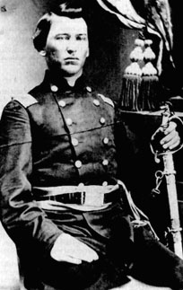

|

NAME: James Monroe Stookey
BORN: 1838
DIED: 1880
ALLEGIANCE: Union
HIGHEST RANK: Major
UNIT: 9th Missouri Infantry/59th Illinois Infantry, Company E
RECORD: Enlisted in the 9th Missouri on September
18, 1861. Regiment renamed the 59th Illinois on February 12,
1862. Wounded at Perryville, Kentucky, on October 8.
Promoted to major in 1864. Commanding the 80th Illinois from
June 7 to September 8 or later. Commanding the 59th Illinois
from the autumn of 1864 through January 1865 or later.
Mustered out December 8, 1865, at New Braunfels, Texas.
|
|
"I was never in any kind of business I liked so much as
this," Captain James Monroe Stookey wrote to his family in
August 1861. "Roe" Stookey, an Illinois farmer, was writing
from an army camp in St. Louis, Missouri, at the time. That
summer he had recruited and organized a company of Union
infantry in St. Clair County, Illinois, and become its
captain. By the time he reached St. Louis with his troops in
September 1861,Illinois had exceeded its volunteer quota, so
his outfit was accepted into Federal service as part of the
9th Missouri Infantry.
The regiment was assigned to Major General John C.
Frémont's Army of the West, then to the Department of
Missouri. In February 1862, the Illinoisans finally entered
service under the flag of their own state; they were
reorganized as the 59th Illinois Volunteer Infantry, of
which Stookey's regiment was designated Company E. They
served under that name through the end of the war, marching
and fighting primarily in the Western theater.
The men of Company E saw their heaviest fighting at
Perryville, Kentucky; Stone's River, Chattanooga, and
Nashville, Tennessee; and Chickamauga and Atlanta, Georgia.
Roe himself was wounded at Perryville and was cited for
bravery at Stone's River, Atlanta, and Nashville. In one
11-day span in May 1862, the 59th marched from Batesville,
Arkansas, to Cape Girardeau, Missouri--a total of some 250
miles. "Now, if you ever find any troops that can beat that
marching," Stookey wrote, "you can put them down as good
marchers."
One of Roe's fellow soldiers described him as "cheery as
a linnet, brave, ...considerate of the men, but enforces
discipline." The history of the 59th Illinois mentions his
promotion to major and describes him as "a brave, good
officer, and one of the best tacticians in the regiment." He
gained the respect of his superiors to the extent that, in
June 1 864, he was appointed to temporary command of the
80th Illinois Infantry during the Atlanta Campaign. That
fall he commanded his own 59th Illinois in the place of
Colonel P. Sidney Post, who had ascended to brigade command
and was later wounded during the Battle of Nashville on
December 16, 1864.
The exact date of the end of Roe's command of the 59th is
uncertain, but it may have been in January 1865. His service
with the regiment continued after the war's end, until he
was mustered out with the rest of the unit in December 1865.
After the long journey home, Roe married and moved to
Missouri, where he bought land and became a farmer again. He
fathered five children before his death in 1880 at the early
age of 42. He was buried in Belleville, Illinois.
Source: Civil War Times Illustrated
35:3 (June 1996), 88.
|